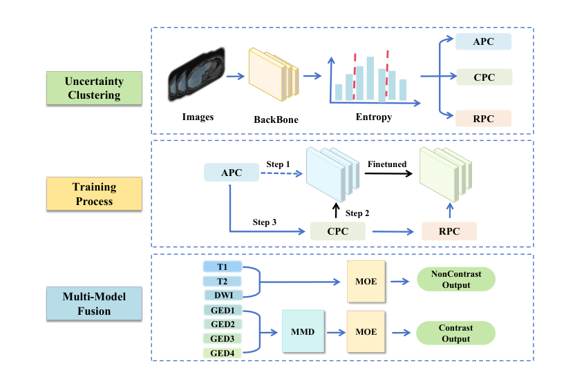

Uncertainty-Guided Curriculum Learning for Automated Liver Fibrosis Staging on Heterogeneous MRI
Comprehensive Analysis and Computing of Real-World Medical Images (CARE 2025), Lecture Notes in Computer Science, vol. 16257, Springer, 2026.
An entropy-guided curriculum learning framework for multi-center, multi-modal liver MRI, combining progressive hard-sample learning, MMD-based domain alignment, and an attention-gated mixture of experts.